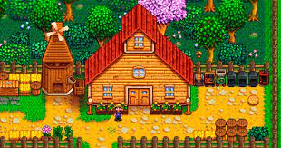

Sobre o Jogo
Stardew Valley é um jogo de simulação de fazenda que oferece muito mais do que apenas plantar e colher. É um mergulho profundo em uma vida rural virtual, onde você pode cultivar seus próprios produtos, criar animais, pescar, minerar, interagir com os moradores locais e até mesmo mergulhar em cavernas cheias de monstros. Ah, e não podemos esquecer do aspecto social, onde você pode construir relacionamentos e até mesmo se casar com um dos habitantes da cidade. Com tantas atividades envolventes, nunca há um momento de tédio em Stardew Valley!
Em Stardew Valley, sua jornada começa ao herdar uma antiga fazenda de seu avô, junto com algumas ferramentas e moedas. Com essa herança, você embarca em uma nova vida, enfrentando o desafio de transformar esta terra selvagem em um lar próspero. No entanto, a tranquilidade da cidade foi abalada com a chegada da Joja Corporation, trazendo consigo mudanças drásticas que impactaram as formas de vida antigas. O Community Center, outrora o coração pulsante da cidade, agora está em ruínas, uma sombra do que já foi. O prefeito Lewis pede sua ajuda para restaurar o Community Center, enquanto Morris, representante da Joja Corporation, está determinado a transformá-lo em um armazém, convidando-o a se associar à empresa por 5000g. Essa decisão crucial cabe a você: restaurar a tradição e a vida comunitária, ou abraçar o capitalismo da Joja Corporation. Se optar por restaurar o Community Center, terá três anos para reunir os itens necessários para concluir os bundles dentro dele. Por outro lado, se escolher o caminho da Joja Corporation, seu foco será acumular riqueza para associar-se à empresa, resultando na destruição do Community Center e na ascensão do Armazém. A cidade de Stardew Valley aguarda sua decisão. Restaurar o Community Center é preservar a alma da comunidade, enquanto se render à Joja Corporation é abraçar o futuro capitalista. Qual será o seu caminho?

Descubra as Diversas Atividades de Stardew Valley
Cultive e Colha com Liberdade
Em Stardew Valley, a colheita e o cultivo são elementos fundamentais que fazem parte da experiência cativante do jogo. Desde o momento em que você herda sua fazenda até o crescimento de um império agrícola, a jornada de plantar, regar e colher é tanto relaxante quanto gratificante. Começando com sementes simples fornecidas pela loja local, você prepara o solo, planta as sementes e começa a cuidar de suas plantações. Ao longo das estações do ano, você precisa ficar atento ao clima, às necessidades de água e até mesmo às pragas que podem prejudicar suas plantas. À medida que suas plantações crescem, você pode expandir seu repertório, experimentando com uma variedade de culturas, desde vegetais básicos até frutas exóticas e flores coloridas. Cada safra tem seu próprio tempo de crescimento e valor de venda, incentivando a diversificação e estratégia na sua fazenda. Além do cultivo, a pesca também é uma habilidade importante em Stardew Valley. Os rios, lagos e oceanos ao redor da cidade oferecem uma grande variedade de peixes para pegar, cada um com seus próprios padrões de comportamento e horários de atividade. A pesca é uma atividade relaxante que oferece uma pausa bem-vinda da rotina diária na fazenda. À medida que você aprimora suas habilidades de cultivo e pesca, novas oportunidades se abrem. Você pode investir em equipamentos melhores, desbloquear áreas mais vastas para cultivo e até mesmo participar de concursos agrícolas locais para mostrar suas habilidades. No final, a colheita e o cultivo em Stardew Valley não são apenas uma maneira de ganhar dinheiro, mas também uma forma de se conectar com a natureza, construir uma comunidade e transformar uma pequena fazenda em um império agrícola próspero. Com sua paciência e dedicação, as possibilidades são infinitas neste mundo rural encantador.

Crie Animais e Construa um Lar
Em Stardew Valley, a criação de animais e a personalização da casa são atividades envolventes que adicionam profundidade à sua experiência agrícola. Ao cuidar de galinhas, vacas e outros animais, você desenvolve laços afetivos e obtém recursos valiosos para o comércio ou para uso próprio. Enquanto isso, a oportunidade de construir e customizar sua casa permite que você transforme um modesto lar em um refúgio confortável e acolhedor. Desde o momento em que adquire seu primeiro galinheiro ou celeiro, até as expansões luxuosas que pode realizar em sua casa, cada passo reflete seu progresso e dedicação como fazendeiro. Decorar os cômodos, escolher móveis e até mesmo adicionar toques pessoais como troféus e colecionáveis, torna sua casa verdadeiramente sua. Além disso, a capacidade de moldar o layout de sua fazenda proporciona infinitas possibilidades criativas. Você pode criar pastagens espaçosas para seus animais pastarem, instalar estufas para cultivos sazonais ou até mesmo decorar áreas ao ar livre com jardins e decorações temáticas. Essas atividades não são apenas mecânicas de jogo, mas oportunidades para expressar sua personalidade e estilo dentro do mundo de Stardew Valley. Cada escolha de design e cada decisão de criação de animais reflete sua visão única para sua fazenda e lar. Assim, enquanto você planta, colhe, e cuida de seus animais, está construindo não apenas uma fazenda, mas um lar cheio de calor e personalidade.

Explore Cavernas e Desvende Mistérios
Explorar as cavernas em Stardew Valley é uma experiência emocionante que adiciona uma dimensão de aventura ao seu cotidiano rural. Sob a pacífica superfície da cidade, você encontrará uma rede intrincada de cavernas repletas de desafios e mistérios esperando para serem desvendados. Enquanto você mergulha nas profundezas escuras, é confrontado com uma variedade de terrenos e criaturas, cada um apresentando seus próprios desafios únicos. Desde enfrentar monstros hostis até resolver quebra-cabeças complexos, cada passo adiante é uma nova oportunidade de superação e descoberta. No entanto, a recompensa por enfrentar esses desafios é imensa. As cavernas estão cheias de recursos valiosos, como minérios preciosos e artefatos antigos, que podem ser utilizados para melhorar sua fazenda e desbloquear novas áreas para exploração. Além disso, ao derrotar monstros e completar tarefas dentro das cavernas, você ganha experiência e avança em suas habilidades, tornando-se mais capaz de enfrentar desafios ainda maiores. Mas as cavernas não são apenas um local de trabalho árduo; elas também são um lugar de maravilha e mistério. À medida que você explora mais profundamente, encontrará artefatos antigos que contam a história da região e segredos escondidos que oferecem pistas sobre o passado da cidade. Em última análise, explorar as cavernas em Stardew Valley é uma experiência envolvente que combina a emoção da aventura com a gratificação da descoberta. Cada expedição traz novos desafios e surpresas, tornando cada viagem uma jornada verdadeiramente única e memorável.

Conecte-se com a Comunidade e Construa Laços
Em Stardew Valley, conectando-se com a comunidade é uma parte essencial e gratificante da experiência de jogo. À medida que você se estabelece como fazendeiro na cidade, terá a oportunidade de interagir com uma variedade de personagens únicos, cada um com sua própria história e personalidade. Ao construir relacionamentos com os habitantes locais, você desbloqueia eventos especiais, missões secundárias e até mesmo novas possibilidades românticas. Passar tempo com os moradores, conversar com eles diariamente e presentear itens que eles gostam, são maneiras de aumentar a amizade e fortalecer os laços. Além disso, participar das atividades da comunidade é uma maneira divertida de se envolver ainda mais com os moradores. Eventos sazonais, como festivais e feiras, oferecem oportunidades únicas de interação e competição. Você pode exibir seus produtos na Feira da Primavera, competir em minijogos no Festival da Estrela Invernal ou dançar no Festival da Dança Florestal. Construir laços com a comunidade não é apenas uma parte opcional do jogo, mas também pode ser fundamental para o seu sucesso como fazendeiro. Os moradores muitas vezes oferecem conselhos úteis, presentes valiosos e até mesmo descontos em lojas locais conforme sua amizade cresce. Além disso, à medida que você se torna mais próximo dos moradores, desbloqueia novas áreas para explorar e novas oportunidades para expandir sua fazenda. Por exemplo, alguns personagens podem lhe ensinar novas receitas de culinária, enquanto outros podem oferecer acesso a áreas restritas ou desafios especiais. Em resumo, conectar-se com a comunidade em Stardew Valley não apenas enriquece sua experiência de jogo, mas também enriquece a própria cidade. Ao construir laços com os moradores, você se torna parte de uma comunidade vibrante e acolhedora, onde a amizade e o apoio mútuo são tão importantes quanto o sucesso na fazenda.

Trilha Sonora Relaxante
A trilha sonora relaxante de Stardew Valley é uma parte essencial da experiência de jogo, transportando os jogadores para um mundo rural encantador e tranquilo. Composta por ConcernedApe, a música captura perfeitamente a atmosfera pacífica e serena da vida no campo. Cada faixa musical é cuidadosamente projetada para refletir os diferentes momentos e estações do jogo. Desde as suaves notas de piano que acompanham os dias calmos de primavera até os acordes alegres e animados que ecoam durante os festivais da cidade, a trilha sonora se adapta de forma magistral às mudanças de cenário e clima. Além disso, a variedade de estilos musicais presentes na trilha sonora acrescenta uma camada extra de profundidade e imersão ao jogo. Dos sons suaves e melódicos das estações mais calmas aos ritmos energéticos das ocasiões especiais, cada música complementa perfeitamente a atmosfera do momento. Mas o verdadeiro poder da trilha sonora de Stardew Valley está em sua capacidade de relaxar e acalmar os jogadores. As melodias suaves e envolventes convidam os jogadores a mergulhar no mundo do jogo e deixar para trás as preocupações do dia a dia. É como se a música criasse uma atmosfera de paz e tranquilidade, onde os jogadores podem desfrutar de momentos de serenidade enquanto cultivam suas colheitas, criam animais ou exploram as cavernas. A trilha sonora relaxante de Stardew Valley não apenas acompanha a jogabilidade, mas também contribui significativamente para a experiência global do jogo. É uma parte essencial do charme e do apelo do jogo, e uma das razões pelas quais tantos jogadores retornam a este mundo encantador vezes após vezes.
Domine Stardew Valley com Dicas e Truques Imbatíveis
Dicas Essenciais para Iniciantes
Em Stardew Valley, dominar os primeiros passos na sua fazenda é crucial para o seu sucesso como fazendeiro. Ao herdar a propriedade de seu avô, você se encontra diante de uma terra vasta e repleta de possibilidades. Os primeiros dias são uma oportunidade para estabelecer as bases do seu império agrícola, e é essencial gerenciar seus recursos com sabedoria. Ao começar, você terá uma série de tarefas básicas para realizar, como limpar o terreno, plantar sementes e cuidar dos animais. Cada ação requer cuidado e planejamento, pois você precisa equilibrar o uso de energia e tempo para garantir o máximo rendimento de suas atividades. Além disso, é importante aprender a usar eficientemente os recursos disponíveis. Desde o uso sábio da água e da energia até a gestão cuidadosa do seu inventário e finanças, cada decisão tem um impacto direto no crescimento e sucesso da sua fazenda. Mas a vida em Stardew Valley não se resume apenas ao trabalho na fazenda. Construir relacionamentos com os habitantes da cidade é uma parte fundamental da experiência. Conversar com os moradores, presentear itens que eles apreciam e participar de eventos da comunidade são maneiras de construir laços e fortalecer amizades. À medida que você se torna mais próximo dos moradores, desbloqueia novas oportunidades e benefícios, como descontos em lojas locais, receitas culinárias exclusivas e até mesmo eventos especiais. Além disso, construir relacionamentos com os habitantes da cidade é essencial para desvendar os mistérios e segredos de Stardew Valley. Em resumo, dominar os primeiros passos na sua fazenda em Stardew Valley é uma mistura de trabalho árduo, planejamento cuidadoso e construção de relacionamentos. Ao equilibrar esses elementos, você estará no caminho certo para construir uma fazenda próspera e uma vida gratificante na cidade rural de Stardew Valley.
Desvende os Segredos e Descubra Tesouros Escondidos
Em Stardew Valley, desvendar segredos e descobrir tesouros escondidos é uma parte emocionante e gratificante da experiência de jogo. À medida que você explora as profundezas das cavernas, encontra uma variedade de desafios e recompensas esperando para serem descobertos. Enquanto você atravessa os corredores escuros e misteriosos das cavernas, encontrará minérios raros, gemas preciosas e artefatos antigos. Cada descoberta não apenas adiciona valor à sua fazenda, mas também desbloqueia novas oportunidades e avanços tecnológicos. Além disso, a cidade de Stardew Valley está repleta de mistérios esperando para serem desvendados. Ao interagir com os habitantes locais, você descobrirá histórias intrigantes, segredos de família e até mesmo conspirações ocultas. Cada conversa e interação oferece pistas e insights que o aproximam de entender completamente a cidade e seus moradores. Mas os segredos de Stardew Valley não se limitam apenas à sua história principal. O jogo está repleto de easter eggs e eventos especiais que acrescentam uma dose extra de diversão e surpresa à experiência. Desde festivais sazonais até encontros com personagens misteriosos, há sempre algo novo e emocionante para descobrir em cada canto da cidade. Em resumo, desvendar os segredos e descobrir tesouros escondidos em Stardew Valley é uma jornada emocionante e cheia de reviravoltas. Ao explorar as cavernas, interagir com os habitantes e estar atento a eventos especiais, você se envolve em um mundo ricamente detalhado e cheio de possibilidades, tornando cada momento de jogo uma aventura única e memorável.

Aprimore sua Experiência com Mods e Personalizações
Em Stardew Valley, aprimorar sua experiência com mods e personalizações adiciona uma camada adicional de profundidade e diversão ao jogo. Com uma comunidade ativa de modders e uma variedade de ferramentas disponíveis, você pode modificar a jogabilidade e adicionar novos conteúdos para tornar sua experiência única e personalizada. Os mods podem variar desde pequenas alterações na mecânica do jogo até adições significativas de conteúdo. Você pode encontrar mods que introduzem novas culturas, animais, edifícios e até mesmo personagens na cidade. Isso permite que você expanda suas opções de jogo e descubra novas maneiras de jogar. Além disso, os mods também podem ser usados para personalizar a aparência do seu personagem e da sua fazenda. Com uma ampla gama de skins e opções de customização disponíveis, você pode criar um visual único que reflita sua personalidade e estilo de jogo. Seja adicionando roupas novas, mudando a aparência dos animais ou redesenhando completamente a fazenda, as possibilidades são infinitas. No entanto, é importante lembrar que nem todos os mods são compatíveis entre si ou com as versões mais recentes do jogo. Portanto, ao instalar mods, é recomendável verificar a compatibilidade e ler as instruções cuidadosamente para garantir uma experiência de jogo suave e sem problemas. Em resumo, aprimorar sua experiência com mods e personalizações em Stardew Valley oferece uma maneira emocionante de explorar novos conteúdos e expandir as possibilidades do jogo. Ao modificar a jogabilidade e personalizar a aparência, você pode criar uma experiência única e personalizada que se adapte perfeitamente ao seu estilo de jogo e preferências.